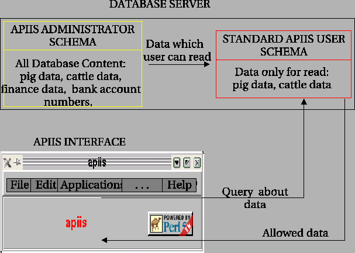

Defining filtering extensions for the basic SQL statement.
The records are filtered by the additionall SELECT statements which have to be defined separately for the each unique set of columns. SELECTS are created one by one and for each of them the following actions are effected:
- At first the column for the SELECT are prepared. Treated set of columns is compared to the basic list from step 1. If some column is missing in the treated set then NULL expresion is placed instead of column. The order of column for this query has to be exactly the same like the order of basic column.
- When the columns are ready then the WHERE clause is fixed. Thus all descriptors assigned for considered collection of columns have to be included. Each of the descriptors is joined to the WHERE clause by the AND operator. If descriptor has more than one value defined then the one condition from these values is created. In this case value are link by the OR operator1.8 and then they are added to the WHERE clause. It can be also that the value of descriptor is related to the view and then the information are taken by the additional subquery (construction: descriptor IN (SELECT) ).
If descriptor name is defined with the NOT prefix, the NOT expression is added to the WHERE before this element1.9.
- The complete SELECT is added to the basic SQL statement (from step 2) by the UNION expression. After this the next set of columns is taken into the process.
- After last SELECT finall SQL is executed and the view for the table is created.
Example:
CREATE VIEW user\_schema.breeds as
SELECT breed\_id, mcname, country\_id, tax\_id, dailygain FROM breeds
UNION
SELECT breed\_id, mcname, country\_id, tax\_id, NULL FROM breeds
WHERE (tax\_id=1 or tax\_id=2)
and (carcassweight>=300 and carcassweight<=400)
and (owner='PL' or owner='DE')
UNION
SELECT breed\_id, mcname, NULL, NULL, NULL FROM breeds
WHERE (owner='FR') and (tax\_id=3)
UNION
SELECT breed\_id, mcname, NULL, tax\_id, dailygain FROM breeds
WHERE (dailygain>=24 and dailygain<=56) and not((tax\_id=1 and so on ...);
In result we get a following view:
Table 1.12:
View for the breeds table
| breed_id |
mcname |
country_id |
tax_id |
dailygain |
| 33 |
Polish Red |
50000091 |
1 |
NULL |
| 45 |
Angler |
50000009 |
1 |
NULL |
| 67 |
Wollschwein |
50000009 |
2 |
NULL |
| 56 |
Pulawska |
50000091 |
2 |
NULL |
| 23 |
Duck de la France |
NULL |
NULL |
NULL |
| 78 |
Lanka |
NULL |
5 |
350 |
| 24 |
Florina |
NULL |
6 |
315 |
|
The symbolic schema of reading data is shown on Figure 1.4.
Figure 1.4:
Reading data from the database
|

|